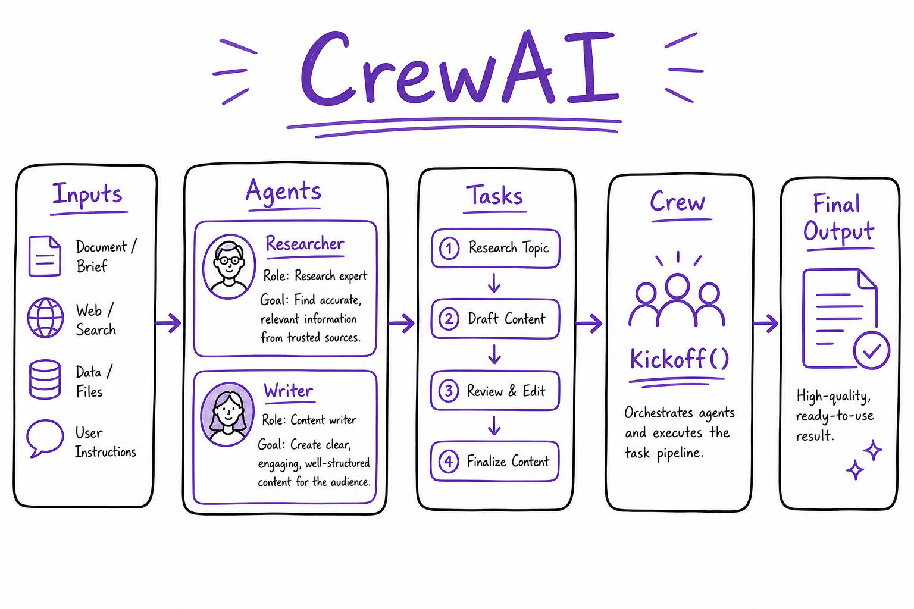
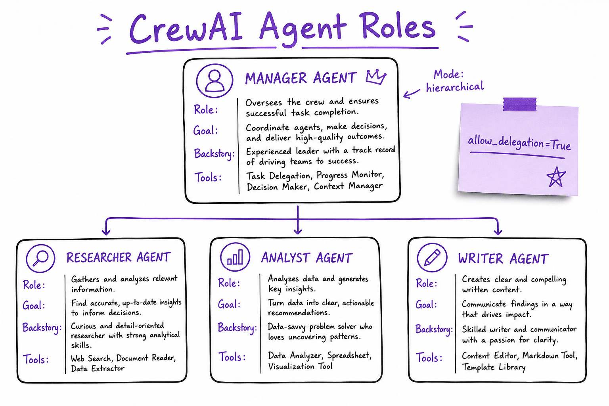
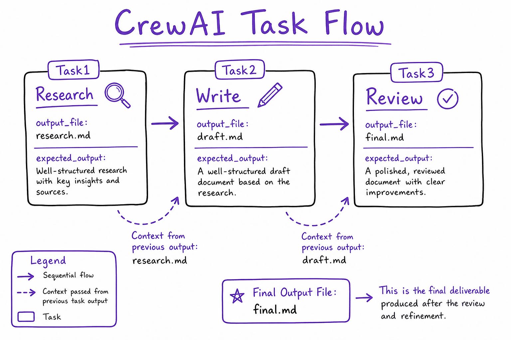
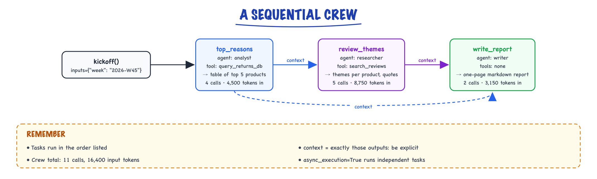
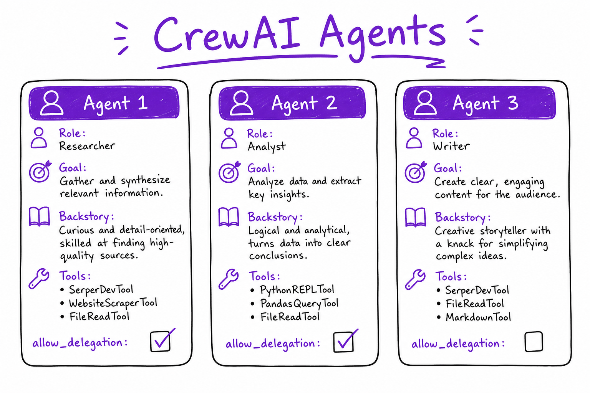
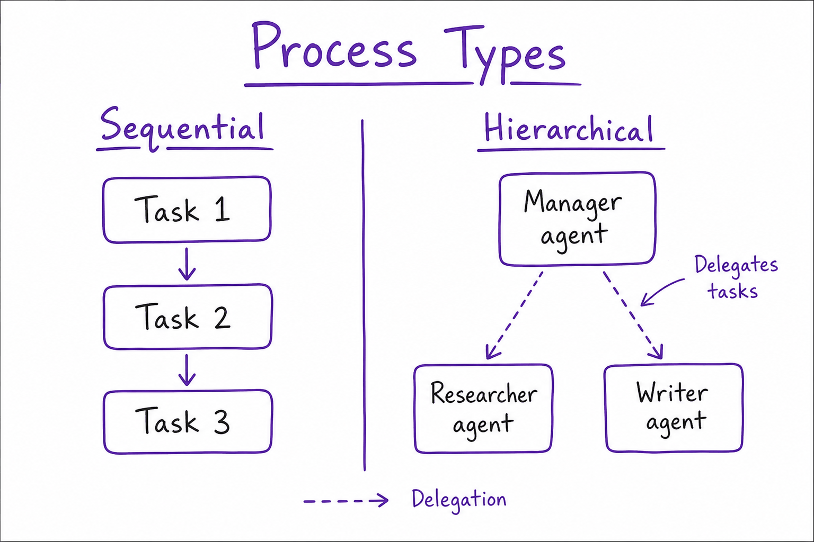

CrewAI // Tech & tools
Role-based multi-agent crews: agents, tasks, processes.
01 — At a glance
Role-based multi-agent framework: Agents with backstory, Tasks with expected output, Crew orchestration (sequential, hierarchical). Fast path from idea to research-style agent teams.

CrewAI flow: define Agents (role, goal, tools) → Tasks (description, agent, context) → Crew(process=sequential|hierarchical) → kickoff() → consolidated output.

A hierarchical crew: a manager agent delegates to researcher, analyst and writer agents, each with a role, goal, backstory and tools.

Tasks run in sequence, and each one receives the previous task's output as context.
02 — New words
| Word | Meaning |
|---|---|
| Agent (CrewAI) | A model plus a persona (role, goal, backstory), a set of tools and an inner loop that keeps calling tools until it produces a final answer. |
| Role, goal, backstory | Three text fields that CrewAI composes into the agent's system prompt. They shape behaviour only through the prompt. |
| Task | One unit of work: a description, an expected_output (what "done" looks like), the agent assigned to it, and optionally the earlier tasks whose output it should see. |
| Crew | A set of agents and tasks plus a process that decides the order of work. crew.kickoff(inputs=...) runs it. |
| Sequential process | Tasks run in the listed order, each one's output passed forward as context. |
| Hierarchical process | A manager agent (an extra model) plans the work, delegates tasks to the other agents and checks their results. |
| Delegation | An agent asking a coworker agent to do work or answer a question, implemented by giving it extra tools that call the other agent. |
| ReAct loop | Reason-and-act: the model writes a thought, picks a tool and its input, sees the result (the observation), and repeats until it gives a final answer. |
| max_iter | The cap on an agent's tool-loop iterations for one task; the main guard against runaway loops. |
| Flow | CrewAI's layer for explicit, event-driven control: Python methods wired with decorators such as start, listen and router, sharing a typed state, that can call crews as steps. |
| Guardrail | A check run on a task's output (a function or a schema) that rejects it and asks the agent to retry if it fails. |
| Least privilege | Scoped, minimal tool permissions to limit blast radius. |
The lesson
03 — The question
Some work naturally splits into specialist jobs: one person pulls the data, another reads customer comments, a third writes the summary. CrewAI lets you express an LLM application that way: you declare agents with roles and tools, tasks with expected outputs, and a process that runs them. It is the highest-level of the common agent frameworks: you describe a team and a plan, and it writes the prompts and runs the loops.
That height is both the appeal and the risk. Interviewers ask:
- What does an agent's "role" actually do mechanically, and what does a crew run look like in model calls?
- Sequential versus hierarchical: what does the manager cost, and what can go wrong?
- How many tokens and calls does a crew spend compared with a plain pipeline doing the same job?
- When would you choose CrewAI over LangGraph or a few functions of your own?
Running example: the electronics shop from LangChain and LangGraph wants a weekly returns-insights report for its merchandising team. Three specialists: an analyst who queries the returns database, a researcher who reads the week's customer reviews of the most-returned products, and a writer who turns both into a one-page report. We will build it as a crew, count every model call and token, and then ask whether it should be a crew at all.
04 — Step 1: what a role really is
A CrewAI agent is declared like a job description:
analyst = Agent(
role="Returns Analyst",
goal="Find the top return reasons this week",
backstory="You have run e-commerce analytics for ten years.",
tools=[query_returns_db],
)
Nothing about "Returns Analyst" exists outside the prompt. CrewAI composes the three fields into a system message, roughly: "You are Returns Analyst. You have run e-commerce analytics for ten years. Your personal goal is: Find the top return reasons this week", followed by the tool descriptions and instructions for the answer format. The model then plays that character.
Role-playing does help, for concrete reasons that have nothing to do with personality:
- Narrow context. Each agent's prompt contains only its own job and tools, so the model is not choosing among twelve tools for every step.
- Tool scoping. The writer gets no database tool, so it cannot run a query even if the model wants to. That is least privilege, enforced in code.
- Separable outputs. Each task produces an inspectable intermediate result you can test and log on its own.
What a role does not do: add knowledge or skill. "Ten years of analytics" does not make the model better at SQL; at most it nudges tone and thoroughness. Treat backstory as prompt engineering, and evaluate it as such.
05 — Step 2: inside one agent, a tool loop
When an agent works on a task, it runs a tool loop, the same loop described in The agent loop:
- Send the system prompt, the task, any context and the work so far to the model.
- The model either requests a tool (with arguments) or gives a final answer.
- If a tool was requested, run it, append the result (the observation) and go to 1.
- Stop on a final answer, or when
max_iteriterations are used up, in which case the agent is pushed to answer with what it has.
Depending on the model, the tool request is either a native function call or text in a ReAct format ("Thought: ... Action: query_returns_db Action Input: {...}") that the framework parses. The text format has a specific failure: the model sometimes writes the "Observation:" line itself, inventing a tool result instead of waiting for one. Native function calling avoids that, so prefer models and settings that use it.
The cost structure follows from the loop. Every iteration re-sends everything so far, so an agent that takes \(k\) iterations, with a fixed prompt \(F\), a task description \(D\), context \(C\) and about \(s\) tokens added per iteration, consumes
\[ \sum_{j=0}^{k-1} \big(F + D + C + s\,j\big) = k\,(F + D + C) + s\,\frac{k(k-1)}{2} \]input tokens. Both \(k\) and \(C\) are things the crew design controls.
06 — Step 3: tasks are the contract
A task binds a piece of work to an agent:
top_reasons = Task(
description="Query this week's returns. Rank the top 5 products by return count, with reasons.",
expected_output="A table: product, returns, top reason, share of returns.",
agent=analyst,
)
expected_output is the most important field in CrewAI. It is appended to the prompt as the definition of done, so it acts as the agent's rubric: an agent told "a table with these four columns" produces one far more reliably than an agent told "analyse returns". Make it concrete: format, length, required fields.
Tasks can go further than text. output_pydantic (or output_json) asks for the answer as a typed object and validates it, so the next step receives fields rather than prose. A guardrail function can inspect the output and reject it with a reason, which sends the agent back to try again. human_input=True asks a person to review the output before the crew moves on. And context=[other_task] declares which earlier outputs this task should see.
The result of each task is a task output object holding the raw text and, if requested, the parsed object. The crew's result holds every task's output plus token usage, which is what you log.
07 — Step 4: the sequential process
With process=Process.sequential, the crew runs tasks in the order listed. A task with a context list receives exactly those tasks' outputs; without one, earlier output is passed along automatically (exactly which outputs varies by version, so be explicit). For the returns report:

kickoff runs the three tasks in the order listed; each task is an agent loop, and context hands top_reasons' output to both later tasks and review_themes' output to the writer.
Put numbers on it with the formula from Step 2. Assume a fixed prompt of 600 tokens for agents with tools (persona, tool schemas, format rules) and 300 for the writer, a 150-token task description, 250 tokens added per loop iteration, and 500-token task outputs passed on as context. The writer has no tools, so its two calls are a first draft and one rewrite after the report guardrail (Step 10) rejects it; a draft that passes first time is one call:
| Task | Iterations \(k\) | Context \(C\) | Input tokens |
|---|---|---|---|
| top_reasons (analyst) | 4 | 0 | 4,500 |
| review_themes (researcher) | 5 | 500 | 8,750 |
| write_report (writer) | 2 | 1,000 | 3,150 |
| Crew total | 11 calls | 16,400 |
The sequential process is a pipeline with an agent loop in each stage. Its strengths are those of any pipeline: predictable order, inspectable intermediate outputs, and a cost you can estimate in advance. Independent tasks can be marked async_execution=True to run concurrently, with a later task listing them all in context to wait for them.
08 — Step 5: the hierarchical process
With process=Process.hierarchical and a manager_llm (or a custom manager agent), CrewAI adds a manager. The manager receives the list of tasks and the roster of agents, decides who should do each task, delegates it with instructions, reviews the result, and may send work back. The specialists no longer need to be assigned to tasks in advance.
Mechanically, the manager is another agent whose tools are "delegate work to a coworker" and "ask a coworker a question". Each delegation is a tool call whose execution runs the chosen agent's own tool loop. So the manager adds model calls of its own and rewrites the task in its own words before the specialist sees it.
For the report, suppose the manager makes about 2 calls per task (delegate, then review) at about 1,500 input tokens each, since it carries the roster and task list. That adds \(2 \times 3 \times 1{,}500 = 9{,}000\) tokens, about 55% more than the sequential crew, before any re-delegation. In exchange you get dynamic assignment, which helps when the right specialist is not known in advance (an incoming request might need the analyst, the researcher or both).
Failure modes specific to the manager:
- Lossy re-instruction. The manager paraphrases the task; requirements in your
expected_outputcan be dropped. - Re-delegation loops. The manager is unhappy with a result and sends it back, repeatedly, until
max_iter. - Premature "done". The manager summarises a partial result as complete.
If the task-to-agent mapping is fixed, as in the weekly report, the sequential process is cheaper and more predictable. Use the hierarchical process only when routing genuinely needs judgment.
09 — Step 6: delegation between peers
allow_delegation=True on an ordinary agent gives it the same coworker tools the manager has. The researcher, unsure what "return reason code R7" means, can ask the analyst. This is useful in moderation and dangerous as a default:
- Every delegation runs another agent's whole tool loop, so one question can cost several calls.
- Two agents that may both delegate can bounce a question between them; only
max_iterstops it. - The cost of a run stops being predictable from the task list, which is the main thing that made the sequential process attractive.
The production default is delegation off, with information an agent might need passed explicitly through context or included in its tools. Turn delegation on for a specific agent when you have seen it needed, and watch its call counts.
10 — Step 7: memory and knowledge
CrewAI can attach memory to a crew (memory=True). Conceptually there are a few kinds; the exact storage backends vary by version, so check the documentation of the one you install:
- Short-term memory: recent outputs from this run, stored with embeddings and retrieved into later agents' prompts when relevant.
- Long-term memory: results and evaluations of past runs, persisted so the crew can draw on earlier weeks.
- Entity memory: facts about named things (a product, a supplier) gathered during runs.
- Knowledge sources: documents (the returns policy, the product catalogue) indexed for retrieval by agents, which is RAG under another name; see The RAG pipeline.
Two cautions. Memory retrieval adds embedding calls and prompt tokens to every step that uses it. And long-term memory makes runs depend on history: this week's report can differ because of what was stored last week, which is a debugging and evaluation problem. For a weekly report, passing last week's report in explicitly as an input is often clearer than enabling persistent memory. See Memory and context.
11 — Step 8: flows, for the parts that must be deterministic
A crew decides its own steps inside each task. Often you want the opposite around it: fixed control flow with LLM work in specific places. CrewAI's Flows provide that. A flow is a Python class whose methods are wired by decorators: a start method, methods that listen for another method's completion, and router methods that choose a branch from the state. Methods share a typed state object, and any method can call a crew, a single model call or plain code.
For the report, a flow might be: a start method runs the SQL query in plain code (no agent needed), a router skips the review analysis if returns fell this week, a crew handles the review themes and writing, and a final method posts the report to Slack. The deterministic parts are code; the open-ended parts are agents. That split, "code for control, agents for judgment", is the same lesson LangGraph teaches with edges and nodes. Flows can persist their state, but LangGraph's checkpoint-per-step, interrupt and resume model is more developed if durability and human approval are central.
12 — Step 9: what it costs and how slow it is
From Step 4, the sequential crew spends 11 model calls and about 16,400 input tokens per report. At an illustrative $3 per million input tokens that is about $0.05 a week. For a weekly report, cost is irrelevant and latency (11 sequential calls at about 2 s each, so 20-plus seconds plus tool time) is fine.
Now compare the same job done as a plain pipeline: code runs the SQL query and fetches the reviews; one model call summarises the review themes (about 4,000 input tokens of reviews); one call writes the report (about 1,500). That is 2 calls and about 5,500 input tokens, a third of the crew's tokens, with no loops and a fixed latency of two calls.
The difference matters as soon as the work moves into a request path. If the shop wanted a per-customer "why are people returning this product?" answer at 50,000 requests a day, the crew design would cost about \(16{,}400 \times 50{,}000 \times \$3 / 10^6 \approx \$2{,}460\) a day against about $825 for the pipeline, and take 20 seconds instead of 3 or 4. The crew's extra cost buys flexibility (agents decide what to query and read); the question is whether the task needs it.
The test. If you can write the steps of the job down in advance, it is a pipeline; build it with code and a few model calls. Use agents for the parts where the next step genuinely depends on what was found.
13 — Step 10: making a crew reliable
- Bound everything.
max_iterper agent, a rate limit on model requests (max_rpm), and a timeout on the whole kickoff. - Type the hand-offs. Use
output_pydanticon every task whose output feeds another task, so the writer receives a validated list of products, not free text it must reinterpret. - Guard outputs. A guardrail on the report checks that every product named appears in the analyst's table, which catches invented products before a human reads them.
- Scope tools. Read-only database credentials for the analyst; no tools for the writer.
- Log per task. Record each task's output, call count and tokens, so a bad report can be traced to the stage that went wrong. See Observability.
- Evaluate the stages. A small golden set of past weeks with known top reasons lets you score the analyst stage on its own; judge the final report with a rubric (Evaluating LLM features).
14 — Choosing CrewAI, or not
| Situation | Choice | Why |
|---|---|---|
| Research or reporting job with clear specialist stages, run occasionally | CrewAI, sequential process | Fastest to express; cost and latency do not matter at this volume. |
| Prototype to explore whether a multi-agent split helps at all | CrewAI | Cheap to try roles and task boundaries before investing in a graph. |
| Steps are knowable in advance | Plain pipeline (code plus a few model calls) | Fewer calls, fixed latency, easier to test. |
| Agent with approvals, resumability, per-step audit | LangGraph | Checkpoints, interrupts and explicit edges. |
| Request-path feature at high volume | Pipeline or a single tool-using agent | A crew multiplies calls and latency per request. |
For the wider comparison, see Choosing an agent framework; for when multiple agents beat one, Multi-agent systems.
15 — In code: the crew, and a cost model you can run
The crew itself, written against CrewAI's documented API (it needs the crewai package on a recent Python and a model API key):
# Needs crewai and a model API key; written against the documented API. from crewai import Agent, Task, Crew, Process from pydantic import BaseModel class TopReturns(BaseModel): products: list[dict] # product, returns, top_reason, share analyst = Agent(role="Returns Analyst", goal="Find the top return reasons in week {week}", backstory="You have run e-commerce analytics for ten years.", tools=[query_returns_db], max_iter=6, allow_delegation=False) researcher = Agent(role="Review Researcher", goal="Explain why customers return these products", backstory="You read customer reviews and extract recurring complaints.", tools=[search_reviews], max_iter=6, allow_delegation=False) writer = Agent(role="Report Writer", goal="Write a one-page report for merchandising", backstory="You write short, specific business reports.", tools=[]) t1 = Task(description="Rank the top 5 products by returns in week {week}, with reasons.", expected_output="Top 5 products with return count, top reason and share of returns.", agent=analyst, output_pydantic=TopReturns) t2 = Task(description="For each product, summarise the main complaint themes in reviews.", expected_output="Per product: 2-3 themes, each with one short customer quote.", agent=researcher, context=[t1]) t3 = Task(description="Write the weekly returns report.", expected_output="Markdown, under 400 words: headline, table, one action per product.", agent=writer, context=[t1, t2]) crew = Crew(agents=[analyst, researcher, writer], tasks=[t1, t2, t3], process=Process.sequential, max_rpm=30) result = crew.kickoff(inputs={"week": "2026-W45"}) print(result.raw, result.token_usage)
And the cost model from Steps 2, 4, 5 and 9, which runs anywhere:
def task_input_tokens(fixed, task, context, iters, step=250): """Input tokens over one task's tool loop: each iteration re-sends everything so far.""" return sum(fixed + task + context + step * j for j in range(iters)) TASK = 150 # task description + expected_output OUT = 500 # each task's final answer, passed on as context crew = [ # (agent, fixed prompt tokens, context tokens, loop iterations) ("analyst", 600, 0, 4), ("researcher", 600, OUT, 5), ("writer", 300, 2 * OUT, 2), ] total, calls = 0, 0 for name, fixed, ctx, iters in crew: t = task_input_tokens(fixed, TASK, ctx, iters) total, calls = total + t, calls + iters print(f"{name:10s} calls={iters} input tokens={t:,}") print(f"sequential crew: {calls} calls, {total:,} input tokens") manager = 2 * 3 * 1500 # hierarchical: ~2 manager calls per task, ~1,500 tokens each print(f"hierarchical adds ~{manager:,} tokens ({manager / total:.0%} more)") pipeline = 4000 + 1500 # code does the queries; 2 model calls print(f"plain pipeline: 2 calls, {pipeline:,} input tokens; the crew uses {total / pipeline:.1f}x")
It prints 4,500, 8,750 and 3,150 for the three tasks, a crew total of 11 calls and 16,400 tokens, 9,000 extra tokens (55%) for a hierarchical manager, and a pipeline at 5,500 tokens, with the crew using 3.0 times as many. Change iters or OUT and watch the quadratic term and the context term move.
Quick reference
16 — What & Why
Problem: Multi-step workflows (research → analyze → write) map naturally to roles, but hand-rolling LangGraph nodes for every demo is slow. CrewAI offers declarative Agents, Tasks, and Crew processes.
Functional
- Define agents with role, goal, backstory, and tool subsets
- Chain tasks with explicit dependencies via
context=[prior_task] - Sequential or hierarchical (manager delegates) execution
kickoff(inputs={...})runs full workflow and returns consolidated output
Non-Functional
- Cost — multiple LLM calls per crew run; cap tasks and delegation
- Control — less fine-grained than LangGraph for HITL and audit
- Speed to prototype — excellent for research/report pipelines
Production systems needing approval gates often migrate to LangGraph. CrewAI sits above Calling a model and often uses LangChain tool wrappers. Multi-agent patterns: Multi-agent systems.
When crews beat single agents
- Output requires distinct expert personas (legal vs technical vs executive tone)
- Pipeline has 3+ stages with different tool sets per stage
- Research tasks benefit from verbose backstory-driven thoroughness
- You need a demo in hours, not days of graph engineering
When to skip CrewAI
- Single retrieval + answer (use LCEL or LlamaIndex)
- Hard compliance gates on each tool call (use LangGraph HITL)
- Sub-100ms routing (no LLM orchestrator)
17 — Core Concepts
| Term | Definition | Gotcha |
|---|---|---|
| Agent | role + goal + backstory + tools + LLM | Backstory strongly shapes tone and thoroughness |
| Task | description + expected_output + assigned agent | context=[task1] injects prior task output |
| Crew | agents + tasks + process + optional manager | kickoff() is synchronous by default |
| Process | sequential | hierarchical | consensual | Hierarchical requires manager_llm |
| Delegation | Agent asks another agent for help | allow_delegation=True increases cost unpredictably |
18 — API / Interface Surface
from crewai import Agent, Task, Crew, Process
from crewai.tools import tool
@tool
def web_search(query: str) -> str:
"""Search the web for current information."""
return search_api(query)
researcher = Agent(
role="Senior Researcher",
goal="Find accurate, cited facts on {topic}",
backstory="You are a meticulous analyst who verifies sources.",
tools=[web_search],
verbose=True,
)
writer = Agent(
role="Technical Writer",
goal="Produce clear markdown reports",
backstory="You translate research into executive summaries.",
)
t1 = Task(
description="Research {topic}. Include 5+ bullet facts.",
expected_output="Bullet list of verified facts with sources",
agent=researcher,
)
t2 = Task(
description="Write a 500-word report from research.",
expected_output="Markdown report with headings",
agent=writer,
context=[t1],
)
crew = Crew(
agents=[researcher, writer],
tasks=[t1, t2],
process=Process.sequential,
verbose=True,
)
result = crew.kickoff(inputs={"topic": "RAG trends 2025"})
print(result.raw)Crew configuration knobs
| Parameter | Effect |
|---|---|
verbose=True | Print intermediate agent reasoning to stdout |
memory=True | Short-term memory within kickoff (not cross-session) |
max_rpm | Rate limit LLM requests per minute |
share_crew | Allow agents to see each other's task context |
planning=True | Optional planner step before tasks (extra LLM call) |
19 — When to Use / When NOT
| Case | CrewAI? | Alternative |
|---|---|---|
| Research report crew (3–5 roles) | Yes | Manual LangGraph subgraphs |
| Content pipeline prototype | Yes | Custom scripts |
| Production support bot with HITL | No | LangGraph + interrupts |
| Single tool-calling agent | No | One ReAct agent sufficient |
| Strict per-step audit trail | Maybe | LangGraph checkpoint history |
20 — Architecture
Inputs (topic, params)
|
v
+---------+
| Crew |
+----+----+
|
+----+----+----+----+
v v v v
Task1 Task2 Task3 ... (each bound to one Agent)
| |
v v
Agent A Agent B (LLM + tools + backstory)
|
v
Consolidated Output (result.raw)Cost model (typical research crew):
Task 1 (research + search tool) ~ 3-8 LLM calls
Task 2 (analysis) ~ 2-4 LLM calls
Task 3 (writing) ~ 2-3 LLM calls
Hierarchical manager overhead ~ 1-2 LLM calls per task
Total ~ 10-20 LLM calls per kickoff() 21 — Deep Dive: Agents

Agent cards: role, goal, backstory, tools, allow_delegation flag.
Each agent is an LLM persona with optional tools. Backstory acts as a soft system prompt — invest time writing it.
- Assign least-privilege tools per agent (researcher gets search, writer gets none)
allow_delegation=Truelets agent spawn sub-requests to peers — use sparinglymax_iter/ RPM limits on underlying LLM to cap runaway loops- Local models via OpenAI-compatible endpoint (Serving & scaling)
| Agent field | Purpose | Tip |
|---|---|---|
| role | Short job title for the agent | Shown in logs and traces |
| goal | Measurable objective | Can include {input} placeholders |
| backstory | Persona and constraints | Strongest behavior lever |
| tools | Allowed capabilities | Least privilege per agent |
| allow_delegation | Can ask peer agents | Default False in prod |
22 — Deep Dive: Tasks
expected_output acts as an implicit rubric the agent optimizes toward — always specify format and length.
t_research = Task(
description="Research {product}. Focus on pricing and competitors.",
expected_output="JSON: {facts: [], sources: []}",
agent=researcher,
)
t_write = Task(
description="Draft blog post from research.",
expected_output="800-word markdown with H2 sections",
agent=writer,
context=[t_research], # prior output injected
async_execution=False,
)async_execution=Trueon independent tasks for parallelism- Output of context tasks appended to prompt automatically
- Use structured expected_output (JSON schema description) for downstream parsing
23 — Deep Dive: Process Types

Sequential vs hierarchical: manager agent routes tasks to researcher and writer.
Sequential
Tasks run in list order. Predictable, easy to debug. Default for pipelines.
Hierarchical
Manager LLM delegates tasks to worker agents dynamically. More flexible, less predictable, higher cost.
crew = Crew(
agents=[researcher, writer, editor],
tasks=[t1, t2, t3],
process=Process.hierarchical,
manager_llm=ChatOpenAI(model="gpt-4o-mini"),
)Cap total tasks at 5–8 for cost control. Log manager decisions for post-hoc debugging.
Full hierarchical crew example
from crewai import Agent, Task, Crew, Process
from langchain_openai import ChatOpenAI
manager_llm = ChatOpenAI(model="gpt-4o-mini", temperature=0)
researcher = Agent(role="Researcher", goal="Gather facts", backstory="Thorough analyst.", tools=[search_tool])
analyst = Agent(role="Analyst", goal="Synthesize insights", backstory="Pattern finder.")
writer = Agent(role="Writer", goal="Draft report", backstory="Clear technical writer.")
t_research = Task(description="Research {topic}", expected_output="10 bullet facts", agent=researcher)
t_analysis = Task(description="Identify 3 themes", expected_output="Theme list + rationale", agent=analyst, context=[t_research])
t_draft = Task(description="Write executive summary", expected_output="400-word markdown", agent=writer, context=[t_analysis])
crew = Crew(
agents=[researcher, analyst, writer],
tasks=[t_research, t_analysis, t_draft],
process=Process.hierarchical,
manager_llm=manager_llm,
verbose=True,
)
print(crew.kickoff(inputs={"topic": "enterprise RAG"}).raw)
24 — Deep Dive: Tools
CrewAI tools wrap LangChain tools or custom functions with descriptions. Same security model as any agent framework.
- Validate JSON args before API calls or SQL
- Read-only tools by default; HITL on writes (publish, delete, charge)
- RAG tool can wrap LlamaIndex query engine or LangChain retriever
Deep dive: Tool calling.
25 — CrewAI vs LangGraph
| Dimension | CrewAI | LangGraph |
|---|---|---|
| Abstraction | High — roles/tasks | Low — nodes/edges/state |
| HITL | Limited | interrupt_before + Command |
| Checkpoint | Basic | Postgres durable per thread |
| Routing | Process enum + manager | Conditional edges in code |
| Best for | Research crews, demos | Production agents, approvals |
Many teams prototype in CrewAI, then reimplement critical paths in LangGraph for production. See Multi-agent systems.
CrewAI + RAG integration pattern
from crewai.tools import tool
from llama_index.core import VectorStoreIndex
index = VectorStoreIndex.from_vector_store(existing_store)
engine = index.as_query_engine(similarity_top_k=8)
@tool
def search_internal_kb(query: str) -> str:
"""Search company knowledge base for policies and docs."""
return str(engine.query(query))
researcher = Agent(
role="Researcher",
goal="Find authoritative internal answers",
backstory="You prefer internal docs over the open web.",
tools=[search_internal_kb],
)Combines LlamaIndex retrieval with CrewAI role orchestration. For customer-facing chat with HITL, wrap in LangGraph instead.
In production
26 — Production & Ops
| Concern | Practice |
|---|---|
| Logging | Full crew output + per-task intermediate results |
| Timeouts | Wrap kickoff() with wall-clock timeout |
| Cost | Cheaper model for manager; disable delegation unless needed |
| Eval | Golden inputs; LLM-as-judge on expected_output rubric |
| Migration | LangGraph when need HITL, audit, custom routing |
28 — Where people get lost
- Crew for 2-step tasks — overkill; use single agent or LCEL chain
- Unbounded delegation loops — agents ping-pong questions
- Identical tools on all agents — violates least privilege
- Vague expected_output — inconsistent format across runs
- No timeout on kickoff() — hung crew blocks worker
- Skipping eval — backstory changes silently degrade quality
- Manager model too weak — bad delegation in hierarchical mode
- No structured expected_output — downstream parsing breaks
Debugging checklist
- Run with
verbose=Trueon agents and crew - Log each task output before next task consumes it
- Compare sequential vs hierarchical on same golden input
- Isolate one agent/task pair to spot bad backstory or tool schema
- Measure token usage per task in LangSmith or custom callback
- "The backstory makes the agent an expert." It is prompt text. It can shape tone and thoroughness; it adds no knowledge. Evaluate it like any prompt change.
- Vague
expected_output. It is the definition of done. "Analyse returns" invites rambling; "a 5-row table with these columns" gets a table. - Defaulting to the hierarchical process. The manager adds calls, paraphrases your tasks and can loop. Use it only when task routing needs judgment.
- Leaving delegation on everywhere. Delegation makes cost unpredictable and allows ping-pong between agents. Off by default; enable per agent.
- Building a crew for a fixed pipeline. If you can list the steps in advance, code plus two model calls is cheaper, faster and easier to test.
- Passing free text between tasks. Type the hand-offs with
output_pydanticso the next agent receives fields, not prose to reinterpret. - Trusting text-format tool loops. A model can write a fake "Observation". Prefer native function calling and check tool outputs in logs.
- Turning on memory without thinking about evaluation. Persistent memory makes runs depend on past runs, which makes failures hard to reproduce.
29 — How this connects
Builds on
- Calling a model — The API call end to end: messages, roles, streaming, tool calls, errors and retries, across providers.
- Vector search & databases — Exact and approximate nearest neighbours, HNSW and IVF, and choosing a vector database.
- The RAG pipeline — Retrieve, augment, generate: every stage from a question to a grounded, cited answer.
- Tool calling — Why tools, what goes over the wire, and designing schemas the model uses well.
- What an agent is — Agents vs agentic AI, what makes something an agent, workflows vs agents, and agent architectures.
- The agent loop — The loop in depth and in code: budgets, errors, human approval, reliability, safety, and how to evaluate an agent.
30 — Check yourself
What does an agent's role change mechanically?
An agent has a fixed prompt of 600 tokens, a 150-token task, 500 tokens of context and takes 5 loop iterations adding 250 tokens each. How many input tokens does the task use?
Why is the sequential process usually right for the weekly returns report, and what would justify the hierarchical one?
Product wants this crew to answer customers live, 50,000 times a day. What do you tell them, with numbers?
Two agents with allow_delegation=True run up a large bill on one report. What probably happened, and how do you prevent it?
max_iter stopped them. Turn delegation off, pass needed information through context, lower max_iter, and alert on per-task call counts.Where do CrewAI Flows fit relative to crews, and when would you still pick LangGraph?
The writer's report names a product the analyst never listed. Name two controls that catch or prevent this.
output_pydantic so the writer receives an explicit product list, and add a guardrail on the report that rejects any product not in that list. Logging each task's output lets you confirm which stage introduced it.What is CrewAI optimized for?
Explain Agent vs Task.
context=[prior_task].Sequential vs hierarchical process?
How control cost?
allow_delegation unless needed; cache research outputs; max 5–8 tasks per crew.CrewAI vs AutoGen?
Can CrewAI use local models?
How test crew output quality?
Tool security?
When migrate to LangGraph?
Memory across kickoffs?
Parallel tasks?
async_execution=True on tasks without context dependency — runs in parallel where safe. Tasks with context=[...] stay sequential.